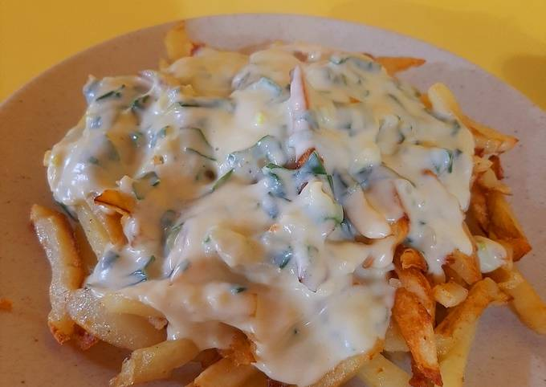

Pizza.

Para no saber que es una pizza hay que vivir debajo de una piedra. Lo que si es un poco mas probable es que no sepas o no estes seguro de como hacerla, por eso te dejo esta receta con la que podes hacer una buena pizza de forma facil
Papas a la crema.
Para mi gran amiga luli la que la que le gusta la papa.
Sweet potato latte

Esta es probablemente la bebida que mas me gusta (despues de la pepsi, obio), asi que es meramente personal y me dedico esta receta a mi mismo.